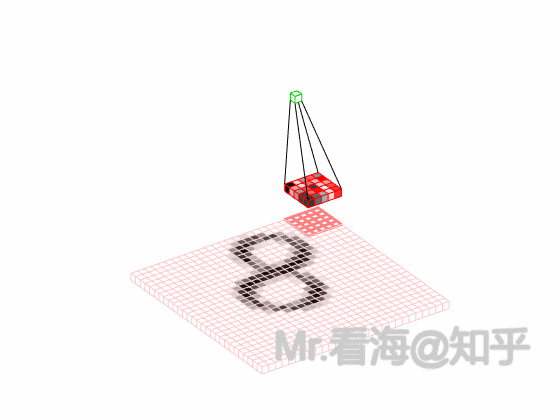

基础
两层神经网络分析为例
摘自zhihu：神经网络15分钟入门！足够通俗易懂了吧

任务描述：在坐标系中，给出一个坐标系，使用神经网络进行分类象限。
输入层
在我们的例子中，输入层是坐标值，例如（1,1），这是一个包含两个元素的数组，
也可以看作是一个12的矩阵。输入层的元素维度与输入量的特征息息相关，如果输
入的是一张3232像素的灰度图像，那么输入层的维度就是32*32。
输入层到隐藏层
连接输入层和隐藏层的是W1和b1。由X计算得到H十分简单，就是矩阵运算：
$$ H=XW1+b1 $$
如上图中所示，在设定隐藏层为50维（也可以理解成50个神经元）之后，矩阵H的大小为（150）的矩阵。
隐藏层到输出层
连接隐藏层和输出层的是W2和b2。同样是通过矩阵运算进行的：
$$ Y=H*W2+b2 $$
通过上述两个线性方程的计算，我们就能得到最终的输出Y了，但是如果你还对线性代数的计算有印象的话，应该会知道：一系列线性方程的运算最终都可以用一个线性方程表示。也就是说，上述两个式子联立后可以用一个线性方程表达。对于两次神经网络是这样，就算网络深度加到100层，也依然是这样。这样的话神经网络就失去了意义。
激活层
神经网络中的激活层（Activation Layer）主要负责为网络中的每一层神经元引入非线性因素。没有激活函数，神经网络就只能执行线性变换，而线性变换无法表达复杂的模式和特征。因此，激活函数是神经网络能够处理非线性问题、进行更复杂计算的关键。
简而言之，激活层是为矩阵运算的结果添加非线性的。常用的激活函数有三种，分别是阶跃函数、Sigmoid和ReLU。

其中，阶跃函数输出值是跳变的，且只有二值，较少使用；Sigmoid函数在当x的绝对值较大时，曲线的斜率变化很小（梯度消失），并且计算较复杂；ReLU是当前较为常用的激活函数。
激活函数具体是怎么计算的呢？
假如经过公式H=X*W1+b1计算得到的H值为：(1,-2,3,-4,7…)，那么经过阶跃函数激活层后就会变为(1,0,1,0,1…)，经过ReLU激活层之后会变为(1,0,3,0,7…)。
需要注意的是，每个隐藏层计算（矩阵线性运算）之后，都需要加一层激活层，要不然该层线性计算是没有意义的。
神经网络之所以能够处理复杂的任务，正是因为非线性激活函数的存在。激活函数将线性变换的输出“扭曲”成非线性，从而让网络能够捕捉数据中的非线性关系，例如在图像、语音、文本等复杂场景中。
输出的正规化
现在我们的输出Y的值可能会是(3,1,0.1,0.5)这样的矩阵，诚然我们可以找到里边的最大值“3”，从而找到对应的分类为I，但是这并不直观。我们想让最终的输出为概率，也就是说可以生成像(90%,5%,2%,3%)这样的结果，这样做不仅可以找到最大概率的分类，而且可以知道各个分类计算的概率值。
Softmax正规化
$$ S_i=\frac{e^i}{\sum{_je^j}} $$
简单来说分三步进行：（1）以e为底对所有元素求指数幂；（2）将所有指数幂求和；（3）分别将这些指数幂与该和做商。这样求出的结果中，所有元素的和一定为1，而每个元素可以代表概率值。
我们将使用这个计算公式做输出结果正规化处理的层叫做“Softmax”层。此时的神经网络将变成如上图所示：
衡量输出的好坏
通过Softmax层之后，我们得到了I，II，III和IV这四个类别分别对应的概率，但是要注意，这是神经网络计算得到的概率值结果，而非真实的情况。
比如，Softmax输出的结果是(90%,5%,3%,2%)，真实的结果是(100%,0,0,0)。虽然输出的结果可以正确分类，但是与真实结果之间是有差距的，一个优秀的网络对结果的预测要无限接近于100%，为此，我们需要将Softmax输出结果的好坏程度做一个“量化”。
一种直观的解决方法，是用1减去Softmax输出的概率，比如1-90%=0.1。不过更为常用且巧妙的方法是，求对数的负数。
还是用90%举例，对数的负数就是：-log0.9=0.046
可以想见，概率越接近100%，该计算结果值越接近于0，说明结果越准确，该输出叫做“交叉熵损失（Cross Entropy Error）”。
我们训练神经网络的目的，就是尽可能地减少这个“交叉熵损失”。
反向传播与参数优化
上边的1~4节，讲述了神经网络的正向传播过程。一句话复习一下：神经网络的传播都是形如Y=WX+b的矩阵运算；为了给矩阵运算加入非线性，需要在隐藏层中加入激活层；输出层结果需要经过Softmax层处理为概率值，并通过交叉熵损失来量化当前网络的优劣。
算出交叉熵损失后，就要开始反向传播了。其实反向传播就是一个参数优化的过程，优化对象就是网络中的所有W和b（因为其他所有参数都是确定的）。
神经网络的神奇之处，就在于它可以自动做W和b的优化，在深度学习中，参数的数量有时会上亿，不过其优化的原理和我们这个两层神经网络是一样的。
迭代
神经网络需要反复迭代。
如上述例子中，第一次计算得到的概率是90%，交叉熵损失值是0.046；将该损失值反向传播，使W1,b1,W2,b2做相应微调；再做第二次运算，此时的概率可能就会提高到92%，相应地，损失值也会下降，然后再反向传播损失值，微调参数W1,b1,W2,b2。依次类推，损失值越来越小，直到我们满意为止。
此时我们就得到了理想的W1,b1,W2,b2。
此时如果将任意一组坐标作为输入，利用图4或图5的流程，就能得到分类结果。
各类型神经网络
CNN卷积神经网络30分钟入门
摘自：【深度学习-第2篇】CNN卷积神经网络30分钟入门！足够通俗易懂了吧（图解）
从前馈神经网络到CNN
前馈神经网络（Feedforward Neural Networks）是最基础的神经网络模型，也被称为多层感知机（MLP）。
它由多个神经元组成，每个神经元与前一层的所有神经元相连，形成一个“全连接”的结构。每个神经元会对其输入数据进行线性变换（通过权重矩阵），然后通过一个非线性函数（如ReLU或Sigmoid）进行激活。这就是前馈神经网络的基本操作。
卷积神经网络（Convolutional Neural Network, 简称CNN）开始。很大程度上，是由于CNN的基本组成部分与前馈神经网络有很紧密的关联，甚至可以说，CNN就是一种特殊的前馈神经网络。
这两者的主要区别在于，CNN在前馈神经网络的基础上加入了卷积层和池化层（下边会讲到），以便更好地处理图像等具有空间结构的数据。
现在画图说明一下。对于前馈神经网络，我们可以将简化后的网络结构如下图表示：

当然，【全连接层-ReLU】可以有多个，此时网络结构可以表示为：

简单地说，CNN就是在此基础上，将全连接层换成卷积层，并在ReLU层之后加入池化层（非必须），那么一个基本的CNN结构就可以表示成这样：

卷积层
使用卷积是为了更好的处理图像等信息。若使用全连接前馈神经网络来处理图像，会使得参数太多、不利于表达空间上的结构。另外难以反应平移不变性。CNN由于权重共享，可以无论特征在何处出现都能被检测到，从而提供了一种平移不变性。另外难以表征抽象层级。CNN通过多个卷积层和池化层的叠加，可以从低级的边缘和纹理特征逐渐抽取出高级的语义特征。这个特性使得CNN非常适合于处理图像等需要多层抽象表示的数据。
卷积的过程，其实是一种滤波的过程，所以卷积核（Convolution Kernel）还有一个别名叫做Filter，也就是滤波器。
当一组数像滑窗一样滑过另外一组数时，将对应的数据相乘并求和得到一组新的数，这个过程必然和卷积有着莫大的关系。
其中权重系数都为1/3，也就是均值滤波的过程。变换不同的权重系数，滤波器将展现出不同的滤波特性。所以我们又可以得到一个结论：当权重系数（卷积核）的参数改变时，它可以提取的特征类型也会改变。所以训练卷积神经网络时，实质上训练的是卷积核的参数。

1
2
3
4
5
|
1.定义一个卷积核：卷积核是一个小的矩阵（例如3x3或5x5），包含一些数字。这个卷积核的作用是在图像中识别特定类型的特征，例如边缘、线条等，也可能是难以描述的抽象特征。
2.卷积核滑过图像：卷积操作开始时，卷积核会被放置在图像的左上角。然后，它会按照一定的步长（stride）在图像上滑动，可以是从左到右，也可以是从上到下。步长定义了卷积核每次移动的距离。
3.计算点积：在卷积核每个位置，都会计算卷积核和图像对应部分的点积。这就是将卷积核中的每个元素与图像中对应位置的像素值相乘，然后将所有乘积相加。
4.生成新的特征图：每次计算的点积结果被用来构建一个新的图像，也称为特征图或卷积图。
5.重复以上过程：通常在一个 CNN 中，我们会有多个不同的卷积核同时进行卷积操作。这意味着我们会得到多个特征图，每个特征图捕捉了原始图像中的不同特征。
|
ReLU在CNN中的位置
卷积层和全连接一样，也是一种线性变换，无论进行多少次这样的操作，都只能获得输入数据的线性组合。如果没有非线性的激活函数，那么即使是多层的神经网络，在理论上也可以被一个单层的神经网络所表达，这极大地限制了网络的表达能力。
ReLU函数是一个非线性函数，只保留正数元素，将负数元素设置为0。这种简单的修正线性单元具有许多优点，例如，它能够缓解梯度消失问题，计算速度快，同时ReLU的输出是稀疏的，这有助于模型的正则化。ReLU的响应函数图像如下：

化繁为简的池化层
ReLU激活层之后就是池化层。
池化层的主要作用是对非线性激活后的结果进行降采样，以减少参数的数量，避免过拟合，并提高模型的处理速度。
池化层主要采用最大池化（Max Pooling）、平均池化（Average Pooling）等方式，对特征图进行操作。以最常见的最大池化为例，我们选择一个窗口（比如 2x2）在特征图上滑动，每次选取窗口中的最大值作为输出，这就是最大池化的工作方式：

大致可以看出，经过池化计算后的图像，基本就是左侧特征图的“低像素版”结果。也就是说池化运算能够保留最强烈的特征，并大大降低数据体量。
到现在，“卷积层→ReLU→池化层”这样一个CNN网络中的基本组成单元的基础概念就讲完了。但是需要注意，卷积层、ReLU和池化层的组合是一种常见模式，但不是唯一的方式。比如池化层作为降低网络复杂程度的计算环节，在算力硬件条件越来越好的当下，有些时候是可以减少采用次数的，也就是池化层可以在部分层设置、部分层不设置。

关于输出层
在卷积神经网络中，最后一层（或者说最后一部分）通常被称为输出层。这个层的作用是将之前所有层的信息集合起来，产生最终的预测结果。
对于CNN进行分类任务时，输出部分的网络结构通常是一个或多个全连接层，然后连接Softmax。
当然，如果想要从卷积层过渡到全连接层，你需要对卷积层的输出进行“展平”处理，简而言之就是将二维数据逐行串起来，变成一维数据。
由于此时数据经过多层卷积和池化操作，数据量已大大减少，所以全连接层设计的参数就不会有那么多了。
由基础模块搭建摩天大楼
在实际应用中，CNN网络往往是由多个卷积层构成，后续再缀接卷积层，则就是将上一层的输出作为后续的输入，然后重复“输入层→卷积层→ReLU→池化层”这个过程，当然池化层是非必须的。
实例分析
CNN基础实验，手写数字识别！
在bilibili上观看了手写数字识别的教程，跟着配置下来非常简单，是基于Python代码的。调用了torch来进行模型训练与识别。
model.py
1
2
3
4
5
6
7
8
9
10
11
12
13
14
15
16
17
18
19
20
21
22
23
24
25
26
27
28
29
30
31
32
33
34
35
36
37
38
39
40
41
42
43
44
45
46
47
48
49
50
51
52
|
import torch
from torch import nn
#定义神经网络Network
class Network(nn.Module):
def __init__(self):
super().__init__()
# 线性层1，输入层和隐藏层之间的线性层
self.layer1 = nn.Linear(784, 256)
# 线性层2，隐藏层和输出层之间的线性层
self.layer2 = nn.Linear(256, 10)
# 在前向传播，forward函数中，输入为图像x
def forward(self, x):
x = x.view(-1, 28 * 28) # 使用view函数，将x展平
x = self.layer1(x) # 将x输入至layer1
x = torch.relu(x) # 使用relu激活
return self.layer2(x) # 输入至layer2计算结果
#手动的遍历模型中的各个结构，并计算可以训练的参数
def print_parameters(model):
cnt = 0
for name, layer in model.named_children(): #遍历每一层
# 打印层的名称和该层中包含的可训练参数
print(f"layer({name}) parameters:")
for p in layer.parameters():
print(f'\t {p.shape} has {p.numel()} parameters')
cnt += p.numel() #将参数数量累加至cnt
#最后打印模型总参数数量
print('The model has %d trainable parameters\n' % (cnt))
#打印输入张量x经过每一层时的维度变化情况
def print_forward(model, x):
print(f"x: {x.shape}") # x从一个5*28*28的输入张量
x = x.view(-1, 28 * 28) # 经过view函数，变成了一个5*784的张量
print(f"after view: {x.shape}")
x = model.layer1(x) #经过第1个线性层，得到5*256的张量
print(f"after layer1: {x.shape}")
x = torch.relu(x) #经过relu函数，没有变化
print(f"after relu: {x.shape}")
x = model.layer2(x) #经过第2个线性层，得到一个5*10的结果
print(f"after layer2: {x.shape}")
if __name__ == '__main__':
model = Network() #定义一个Network模型
print(model) #将其打印，观察打印结果可以了解模型的结构
print("")
print_parameters(model) #将模型的参数打印出来
#打印输入张量x经过每一层维度的变化情况
x = torch.zeros([5, 28, 28])
print_forward(model, x)
|
test.py
1
2
3
4
5
6
7
8
9
10
11
12
13
14
15
16
17
18
19
20
21
22
23
24
25
26
27
28
29
30
31
32
33
|
from model import Network
from torchvision import transforms
from torchvision import datasets
import torch
if __name__ == '__main__':
transform = transforms.Compose([
transforms.Grayscale(num_output_channels=1),
transforms.ToTensor()
])
# 读取测试数据集
test_dataset = datasets.ImageFolder(root='./mnist_images/test', transform=transform)
print("test_dataset length: ", len(test_dataset))
model = Network() # 定义神经网络模型
model.load_state_dict(torch.load('mnist.pth')) # 加载刚刚训练好的模型文件
right = 0 # 保存正确识别的数量
for i, (x, y) in enumerate(test_dataset):
output = model(x) # 将其中的数据x输入到模型
predict = output.argmax(1).item() # 选择概率最大标签的作为预测结果
# 对比预测值predict和真实标签y
if predict == y:
right += 1
else:
# 将识别错误的样例打印了出来
img_path = test_dataset.samples[i][0]
print(f"wrong case: predict = {predict} y = {y} img_path = {img_path}")
# 计算出测试效果
sample_num = len(test_dataset)
acc = right * 1.0 / sample_num
print("test accuracy = %d / %d = %.3lf" % (right, sample_num, acc))
|
train.py
1
2
3
4
5
6
7
8
9
10
11
12
13
14
15
16
17
18
19
20
21
22
23
24
25
26
27
28
29
30
31
32
33
34
35
36
37
38
39
40
41
42
43
44
45
46
47
48
49
50
51
|
import torch
from torch import nn
from torch import optim
from model import Network
from torchvision import transforms
from torchvision import datasets
from torch.utils.data import DataLoader
if __name__ == '__main__':
# 图像的预处理
transform = transforms.Compose([
transforms.Grayscale(num_output_channels=1), # 转换为单通道灰度图
transforms.ToTensor() # 转换为张量
])
# 读入并构造数据集
train_dataset = datasets.ImageFolder(root='./mnist_images/train', transform=transform)
print("train_dataset length: ", len(train_dataset))
# 小批量的数据读入
train_loader = DataLoader(train_dataset, batch_size=64, shuffle=True)
print("train_loader length: ", len(train_loader))
model = Network() # 模型本身，它就是我们设计的神经网络
optimizer = optim.Adam(model.parameters()) # 优化模型中的参数
criterion = nn.CrossEntropyLoss() # 分类问题，使用交叉熵损失误差
# 进入模型的迭代循环
for epoch in range(10): # 外层循环，代表了整个训练数据集的遍历次数
# 整个训练集要循环多少轮，是10次、20次或者100次都是可能的，
# 内存循环使用train_loader，进行小批量的数据读取
for batch_idx, (data, label) in enumerate(train_loader):
# 内层每循环一次，就会进行一次梯度下降算法
# 包括了5个步骤:
output = model(data) # 1.计算神经网络的前向传播结果
loss = criterion(output, label) # 2.计算output和标签label之间的损失loss
loss.backward() # 3.使用backward计算梯度
optimizer.step() # 4.使用optimizer.step更新参数
optimizer.zero_grad() # 5.将梯度清零
# 这5个步骤，是使用pytorch框架训练模型的定式，初学的时候，先记住就可以了
# 每迭代100个小批量，就打印一次模型的损失，观察训练的过程
if batch_idx % 100 == 0:
print(f"Epoch {epoch + 1}/10 "
f"| Batch {batch_idx}/{len(train_loader)} "
f"| Loss: {loss.item():.4f}")
torch.save(model.state_dict(), 'mnist.pth') # 保存模型
|
数据的下载
数据采用mnist国际通用的手写数字识别库，下载方式采用python自动下载，参考了网上大佬的开源，脚本如下：
1
2
3
4
5
6
7
8
9
10
11
12
13
14
15
16
17
18
19
20
21
22
23
24
25
26
27
28
29
30
31
32
33
34
35
36
37
38
39
40
41
42
43
44
45
46
47
48
49
50
|
'''
1. 通过 torchvision.datasets.MNIST 下载、解压和读取 MNIST 数据集；
2. 使用 PIL.Image.save 将 MNIST 数据集中的灰度图片以 PNG 格式保存。
'''
import sys, os
from torchvision.datasets import MNIST
from tqdm import tqdm
sys.path.insert(0, os.getcwd()) # 将当前工作目录添加到模块搜索路径的开头
if __name__ == "__main__":
# 图片保存路径
root = 'mnist_images' # 定义保存图片的根目录
if not os.path.exists(root): # 如果根目录不存在
os.makedirs(root) # 创建根目录
# 训练集60K、测试集10K
# torchvision.datasets.MNIST接口下载数据
training_dataset = MNIST( # 实例化torchvision.datasets.MNIST 类，加载MNIST数据集
root='mnist', # 数据集将被下载到当前工作目录下的 mnist 文件夹中
train=True, # 指定要下载的是训练集
download=True, # 如果本地路径中没有找到数据集，则联网下载；如果数据集已经存在于指定的 root 目录中，则不会重新下载
)
test_dataset = MNIST( # 实例化torchvision.datasets.MNIST 类，加载MNIST数据集
root='mnist', # 数据集将被下载到当前工作目录下的 mnist 文件夹中
train=False, # 指定要下载的是测试集
download=True, # 如果本地路径中没有找到数据集，则联网下载；如果数据集已经存在于指定的 root 目录中，则不会重新下载
)
# 保存训练集图片
with tqdm(total=len(training_dataset), ncols=150) as pro_bar: # 创建进度条，宽度为150个字符
for idx, (X, y) in enumerate(training_dataset): # 遍历训练集，enumerate函数为training_dataset的每个元素生成一个包含索引（idx）和元素本身（X,y）的元组，X代表图像数据，y则为对应标签
# 创建目标文件夹
train_dir = os.path.join(root, "train", str(y)) # 定义保存训练集图片的目录
if not os.path.exists(train_dir): # 如果目录不存在
os.makedirs(train_dir) # 创建目录
f = os.path.join(train_dir, f"training_{y}_{idx}.png") # 保存的文件名
X.save(f) # 保存图片，torchvision.datasets.MNIST默认将图像加载为PIL图像格式，.save() 是PIL库中图像对象的一个方法，用于将图像保存到文件
pro_bar.update(n=1) # 更新进度条
# 保存测试集图片
with tqdm(total=len(test_dataset), ncols=150) as pro_bar: # 创建进度条，宽度为150个字符
for idx, (X, y) in enumerate(test_dataset): # 遍历测试集，enumerate函数为training_dataset的每个元素生成一个包含索引（idx）和元素本身（X,y）的元组，X代表图像数据，y则为对应标签
# 创建目标文件夹
test_dir = os.path.join(root, "test", str(y)) # 定义保存测试集图片的目录
if not os.path.exists(test_dir): # 如果目录不存在
os.makedirs(test_dir) # 创建目录
f = os.path.join(test_dir, f"test_{y}_{idx}.png") # 保存的文件名
X.save(f) # 保存图片，torchvision.datasets.MNIST默认将图像加载为PIL图像格式，.save() 是PIL库中图像对象的一个方法，用于将图像保存到文件
pro_bar.update(n=1) # 更新进度条
|